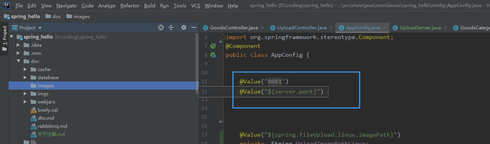

@Value() 注解
1.通常用于读取src/main/resources下添加配置文件application.properties 的配置,也可以分环境读取相应的配置
例:在src/main/resources下添加，application-pro.properties，application-dev.properties和application.properties三个文件 application.properties
当application.propertie设置spring.profiles.active=dev时，则说明是指定使用application-dev.properties文件进行配置
2.读取配置
package com.liaoxx.spring_hello.config;
import org.springframework.beans.factory.annotation.Value;
@Component
public class AppConfig {
@Value("${server.port}")
private int port;
//private static int port; //不能注解到静态变量
private int getPort() {
return port;
}
}
3. private static int port; //不能注解到静态变量 错误
报错: Autowired annotation is not supported on static fields: private static int com.liaoxx.spring_hello.config.AppConfig.port 静态字段不支持Autowired注解:私有静态int ,即不能使用注解将配置常量注入到静态变量
4.在编译器未编译时 ,编译器已经显示读取到配置的常量值 ,但Run 调试时 无法读取配置文件的值

第一步应,在配置类注解为@Component 类
package com.liaoxx.spring_hello.config;
import com.liaoxx.spring_hello.util.OsComponent;
import com.liaoxx.spring_hello.util.DateTool;
import org.springframework.beans.factory.annotation.Value;
import org.springframework.stereotype.Component;
@Component // 在配置类注解为@Component 类
public class AppConfig {
@Value("${spring.fileUpload.linux.imagePath}")
private String UploadImagePathLinux;
@Value("${spring.fileUpload.windows.imagePath}")
private String UploadImagePathWindows;
//根据系统类型返回文件上传目录
public String getUploadImagePath(){
String basePath="";
if (OsComponent.getOsName().equals("linux")){
basePath=UploadImagePathLinux;
}
else if (OsComponent.getOsName().equals("windows")){
basePath = UploadImagePathWindows+ DateTool.getFormatStr("YYYYMM")+"\\"+DateTool.getFormatStr("dd")+"\\";
}
basePath +=DateTool.getFormatStr("YYYYMM")+"\\"+DateTool.getFormatStr("dd")+"\\";
return basePath;
}
}
第二步 在使用的类中 使用@AutoWired 自动注入到该类中
package com.liaoxx.spring_hello.controller.index;
//.......略
@Controller
@RequestMapping("/upload")
public class UploadController {
@Autowired
AppConfig appConfig; // 使用@AutoWired 自动注入到该类中
@ResponseBody
@CrossOrigin(origins = "http://localhost:9527", maxAge = 3600)
@RequestMapping( "/singleImage")
public Map<String, Object> uploadThumb(@RequestParam(value = "file") MultipartFile file) throws IOException, NoSuchAlgorithmException {
//.......略
File serviceFile =new File(prefixPath,System.currentTimeMillis()+suffixName);
file.transferTo(serviceFile);
map.put("imagePath",serviceFile.getAbsolutePath());
return JsonResponse.Success("file uploaded success",map);
}
}